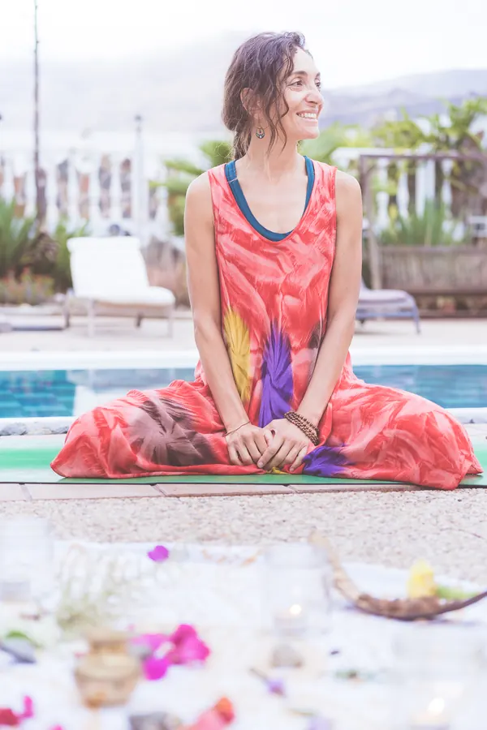
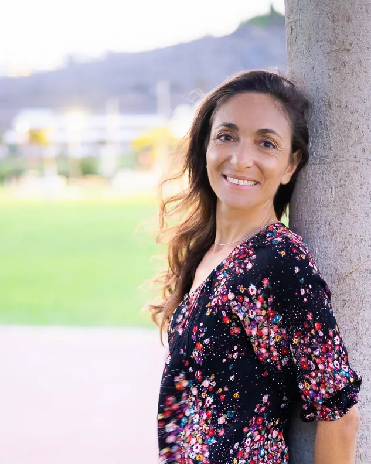
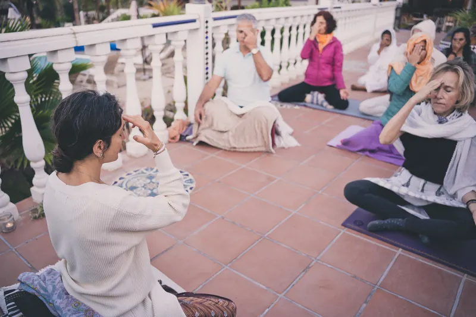

Melania Di Vara
Oltre 10 anni di accompagnamento in percorsi di conoscenza di sé e guarigione emozionale.

Dallo Yoga tradizionale alla vita quotidiana
Formatrice di Yoga, Meditazione e Ayurveda, con oltre 10 anni di esperienza nell'accompagnare percorsi di conoscenza di sé e guarigione emozionale.
Si è formata in scuole tradizionali in India, esplorando diversi cammini di conoscenza e di pratica. Ha approfondito in particolare l'Advaita Vedanta con Maa Gyaan, maestra e guida spirituale con oltre 30 anni di esperienza, e l'Ayurveda con la dottoressa Neetu Singh, medico ayurvedico con oltre 20 anni di esperienza.
Ha accompagnato decine di persone a ritrovare fiducia, salute, vitalità, chiarezza, calma, motivazione e serenità, sia in percorsi individuali sia di gruppo. Guida ritiri e immersioni in India e in Europa, integrando meditazione, respirazione, movimento e auto-osservazione.
È autrice del libro Chakra. Dalla saggezza yogica alla pratica quotidiana, un'opera che avvicina la saggezza dello Yoga alla vita quotidiana.

Risorse da portare a casa
«Il mio obiettivo non è che tu ti senta meglio solo durante una sessione: è che tu porti con te qualcosa da continuare a usare quando torni a casa.»
Non si tratta di fare di più, si tratta di capire di cosa hai bisogno, scoprire cosa ti aiuta e imparare a usarlo da solo.
Nei suoi laboratori teorico-pratici e nelle sessioni individuali, Melania unisce alimentazione, corpo, abitudini e respirazione. Imparerai ad ascoltare i segnali del tuo corpo, a capire come ciò che mangi influisce sulla tua energia, sulla digestione, sul riposo e sulla chiarezza mentale, e a usare diversi modi di respirare per calmarti, attivarti, recuperare energia, concentrarti o sciogliere la tensione.
Niente diete rigide né regole fisse: criteri pratici e pratiche semplici per imparare a prendere decisioni migliori da sola nella tua vita quotidiana.
Melania insegna risorse pratiche per:
- Gestire meglio ansia e stress, imparando risorse per ritrovare la calma e abbassare il livello di tensione.
- Comprendere e gestire le emozioni, perché la rabbia, la frustrazione, la tristezza o il senso di colpa, tra gli altri, non ti trascinino e tu possa rispondere in modo diverso.
- Ritrovare energia e vitalità, imparando a riconoscere cosa ti sta logorando e di cosa hai bisogno per tornare a sentirti con più forza e motivazione.
- Riposare meglio e rilassarti di più, introducendo abitudini e pratiche che favoriscano un riposo più profondo e ristoratore.
- Migliorare la salute digestiva, imparando a riconoscere quali abitudini, ritmi e modi di alimentarti favoriscono una digestione migliore e una maggiore leggerezza.
- Accompagnare i cambiamenti ormonali, con strumenti di alimentazione, riposo, movimento e cura di sé adattati a fasi come il ciclo mestruale, la perimenopausa e la menopausa.
- Migliorare la concentrazione e la capacità di focalizzarti, riducendo la dispersione e imparando a dirigere meglio la tua attenzione.
- Riconnetterti con il corpo, imparando ad ascoltarne i segnali, a riconoscere i tuoi bisogni e ad accorgerti prima della stanchezza, della tensione o dell'eccesso di attivazione.
- Migliorare il rendimento fisico, imparando a usare meglio il respiro, l'attenzione, l'energia e la consapevolezza corporea.
- Migliorare il rapporto con la tua sessualità e il tuo corpo, ritrovando presenza, connessione corporea, conoscenza di sé e fiducia.
- Attraversare i momenti di cambiamento con più chiarezza, riconnettendoti con i tuoi bisogni, i tuoi valori e ciò che desideri davvero.
- Ritrovare motivazione e senso, quando senti di aver perso la direzione o di funzionare in automatico.
- Rendere la cura di sé reale e sostenibile, imparando piccole pratiche da inserire nella tua giornata senza aggiungere altra pressione alla tua vita.
Accompagnamento individuale
Partiamo da ciò che ti sta succedendo, da ciò che vuoi cambiare e da ciò di cui hai bisogno ora.
Possiamo lavorare su aspetti come:
- ansia e stress
- stanchezza e mancanza di energia
- difficoltà a riposare
- digestione e alimentazione
- emozioni difficili
- mancanza di concentrazione
- disconnessione dal corpo
- abitudini che vuoi cambiare
- momenti di cambiamento o di blocco
- perdita di motivazione o di direzione
Durante la sessione combineremo diverse risorse secondo le tue esigenze: conoscenza di sé, respirazione, attenzione, movimento, abitudini, alimentazione e pratiche corporee.
Porterai con te: una comprensione più chiara di ciò di cui hai bisogno e un insieme di pratiche e indicazioni concrete per iniziare ad applicarlo nella tua vita.
Include un follow-up successivo per accompagnare l'integrazione di quanto lavorato.
Modi per lavorare con lei
Mentoring 1:1
Accompagnamento individuale, con un follow-up successivo. Per prenotare, scrivici o visita il suo sito.
Vai a melaniadivara.comRitiri ed eventi
Ritiri e immersioni di El Último Viaje del Ego in India e in Europa.
Vedi i ritiriCorso online
«Tornare a casa. Il viaggio dell'ego», un percorso di tre mesi in diretta su Zoom.
Vedi il corsoPercorsi con piante medicinali
Percorsi terapeutici accompagnati, con preparazione prima e integrazione dopo.
Scopri di più